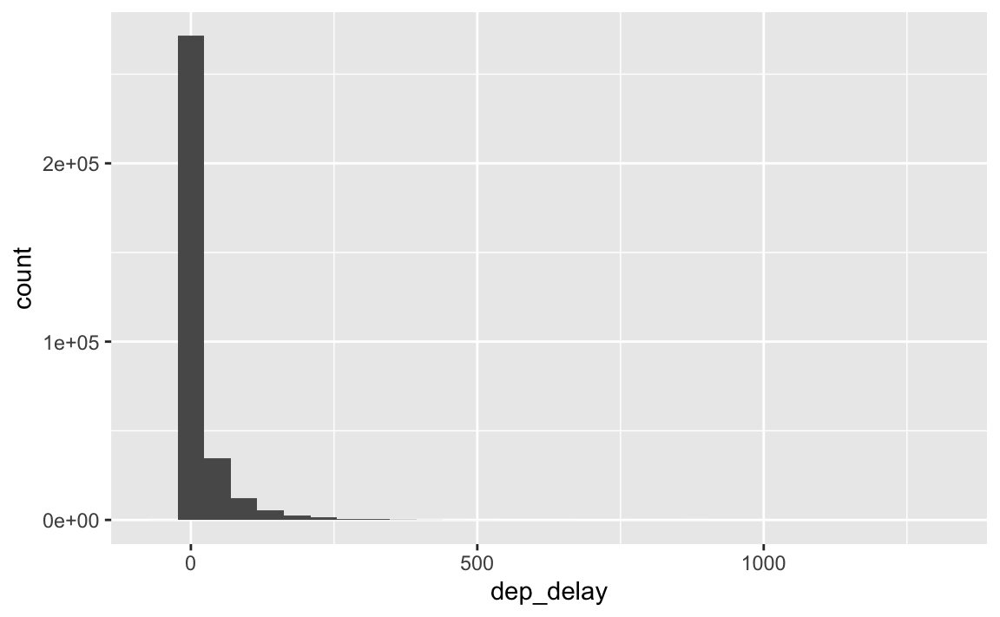
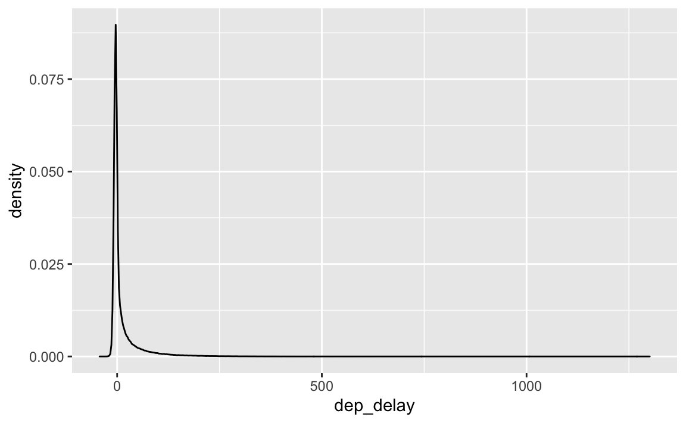
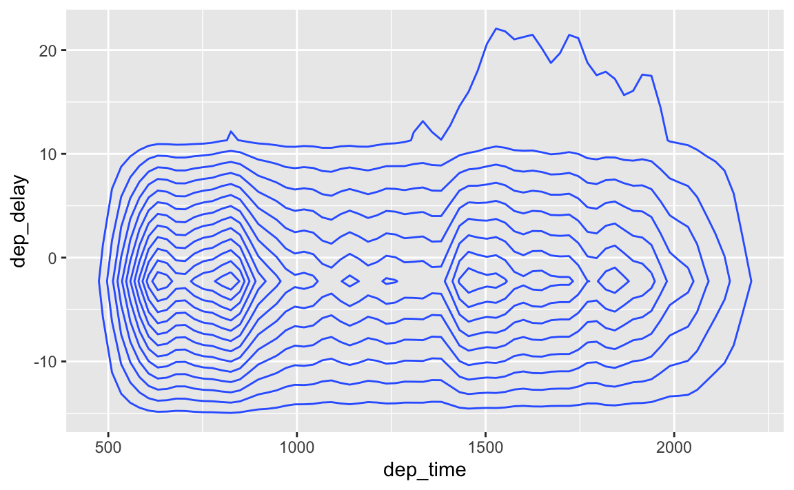
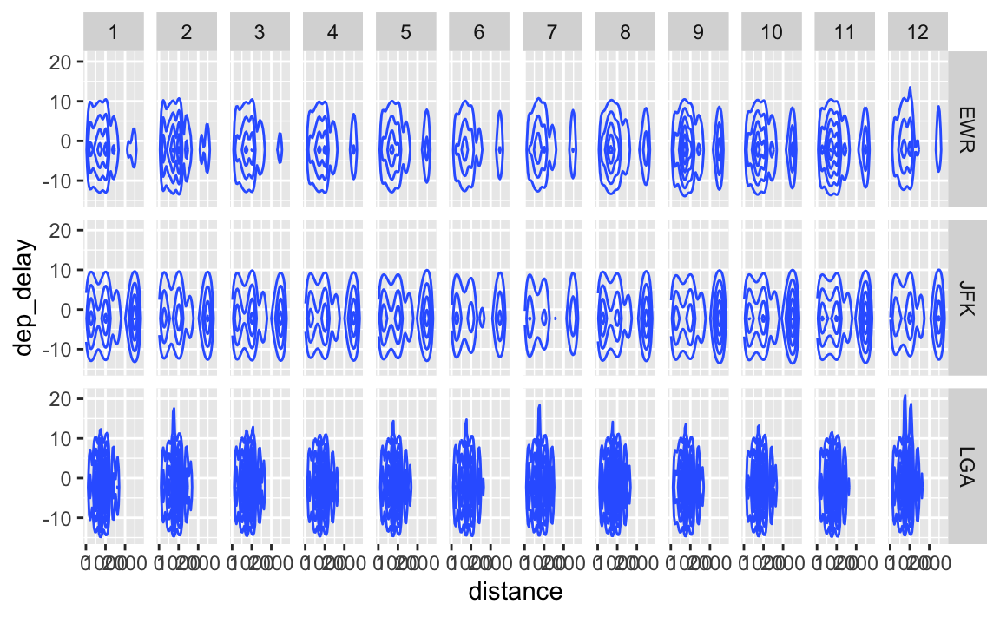
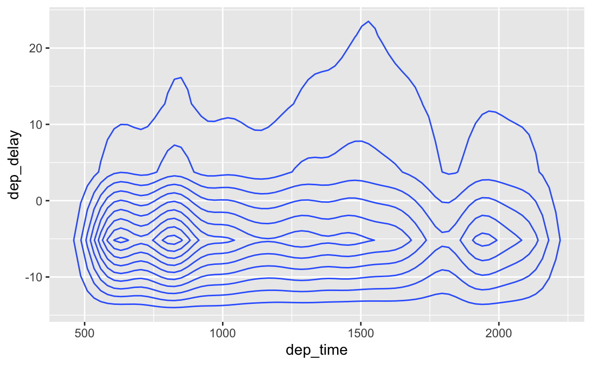
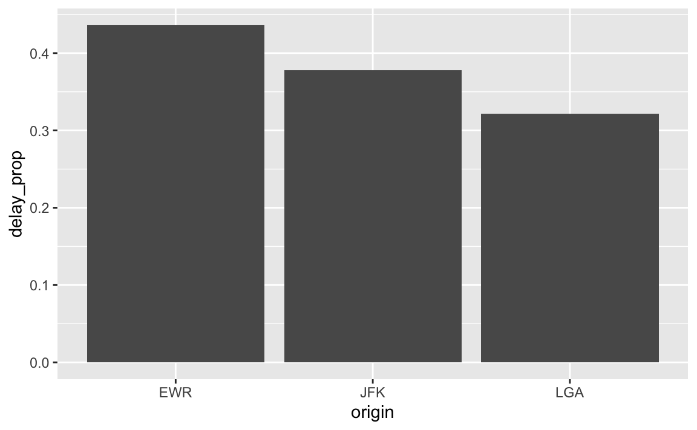
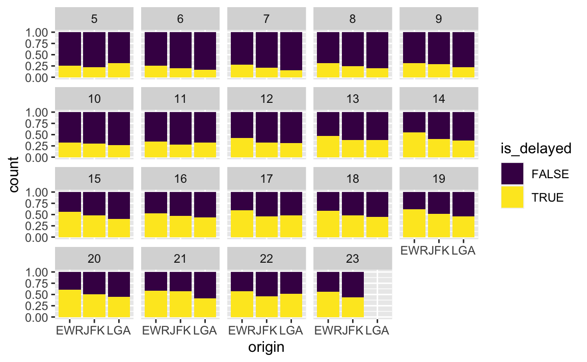

Vorbereitung
Wie immer – zuerst Pakete und Daten laden:
library(tidyverse)
library(nycflights13)
data("flights")Aufgaben zur Datenvisualisierung
Die folgenden Aufgaben beziehen sich auf den Datensatz flights aus dem R-Paket nycflights13.
Visualisieren Sie die Verteilung der Verspätungen der Flüge.
Visualisieren Sie die Verteilung der Verspätung der Flüge pro Abflugsort.
Visualisieren Sie den Zusammenhang von Verspätung und Tageszeit. Reduzieren Sie dabei Overplotting. Tipp: Anstelle von
geom_point()malgeom_bin2d()ausprobieren.Visualisieren Sie den Zusammenhang von Verspätung und Flugstrecke (
distance) – aufgeteilt nach Abflugsort und nach Monat!Visualisieren Sie den Zusammenhang von Verspätung und Tageszeit – für die drei Airlines mit der höchsten Durchschnittsverspätung. Reduzieren Sie dabei Overplotting.
Visualisieren Sie den Anteil der verspäteten Flüge nach Abflugsort.
Visualisieren Sie den Anteil der verspäteten Flüge nach Uhrzeit.
Visualisieren Sie den Anteil der verspäteten Flüge nach Wochentag
Lösungen
1. Visualisieren Sie die Verteilung der Verspätungen der Flüge.
flights %>%
ggplot() +
aes(x = dep_delay) +
geom_histogram()
Alternativ:
flights %>%
ggplot() +
aes(x = dep_delay) +
geom_density()
2. Visualisieren Sie die Verteilung der Verspätung der Flüge pro Abflugsort.
flights %>%
ggplot() +
aes(x = dep_delay) +
geom_density() +
facet_wrap(~ origin)
3. Visualisieren Sie den Zusammenhang von Verspätung und Tageszeit. Reduzieren Sie dabei Overplotting.
Tipp: Anstelle von geom_point() mal geom_bin2d() ausprobieren.
flights %>%
ggplot() +
aes(x = dep_time, dep_delay) +
geom_density2d()
4. Visualisieren Sie den Zusammenhang von Verspätung und Flugstrecke (distance) – aufgeteilt nach Abflugsort und nach Monat!
Reduzieren Sie dabei Overplotting.
flights %>%
ggplot() +
aes(x = distance, dep_delay) +
geom_density2d() +
facet_grid(origin ~ month)
5. Visualisieren Sie den Zusammenhang von Verspätung und Tageszeit – für die drei Airlines mit der höchsten Durchschnittsverspätung.
Reduzieren Sie dabei Overplotting.
Airlines mit der höchsten Verspätung identifizieren:
flights %>%
group_by(carrier) %>%
summarise(dep_delay_carrier = mean(dep_delay, na.rm = TRUE)) %>%
arrange(-dep_delay_carrier) %>%
slice(1:3)
#> # A tibble: 3 x 2
#> carrier dep_delay_carrier
#> <chr> <dbl>
#> 1 F9 20.2
#> 2 EV 20.0
#> 3 YV 19.0flights %>%
filter(carrier %in% c("F9", "EV", "YV")) %>%
ggplot() +
aes(x = dep_time, dep_delay) +
geom_density2d()
6. Visualisieren Sie den Anteil der verspäteten Flüge nach Abflugsort.
flights %>%
mutate(is_delayed = dep_delay > 0) %>%
group_by(origin) %>%
summarise(delay_n = sum(is_delayed == TRUE, na.rm = TRUE),
delay_prop = delay_n / n()) %>%
ggplot() +
aes(x = origin, y = delay_prop) +
geom_col()

Oder so:
flights %>%
mutate(is_delayed = dep_delay > 0) %>%
group_by(origin) %>%
ggplot() +
aes(x = origin, fill = is_delayed) +
geom_bar()Oder so:
flights %>%
mutate(is_delayed = dep_delay > 0) %>%
group_by(origin) %>%
ggplot() +
aes(x = origin, fill = is_delayed) +
geom_bar(position = "fill")7. Visualisieren Sie den Anteil der verspäteten Flüge nach Uhrzeit.
flights %>%
mutate(is_delayed = dep_delay > 0) %>%
group_by(origin) %>%
drop_na(is_delayed, origin) %>%
ggplot() +
aes(x = origin, fill = is_delayed) +
geom_bar(position = "fill") +
facet_wrap(~ hour) +
scale_fill_viridis_d() # d wie "discrete"
8. Visualisieren Sie den Anteil der verspäteten Flüge nach Wochentag
Es gibt ein Paket, das einem die Arbeit mit Datum und Uhrzeit vereinfacht: lubridate (eigentlich gibt’s mehrere Pakete dieser Art).
library(lubridate)flights %>%
mutate(is_delayed = dep_delay > 0) %>%
mutate(day_of_week = wday(time_hour)) %>% # Wochentag
group_by(origin) %>%
drop_na(is_delayed, origin) %>%
ggplot() +
aes(x = origin, fill = is_delayed) +
geom_bar(position = "fill") +
facet_wrap(~ day_of_week) +
scale_fill_viridis_d() # d wie "discrete"